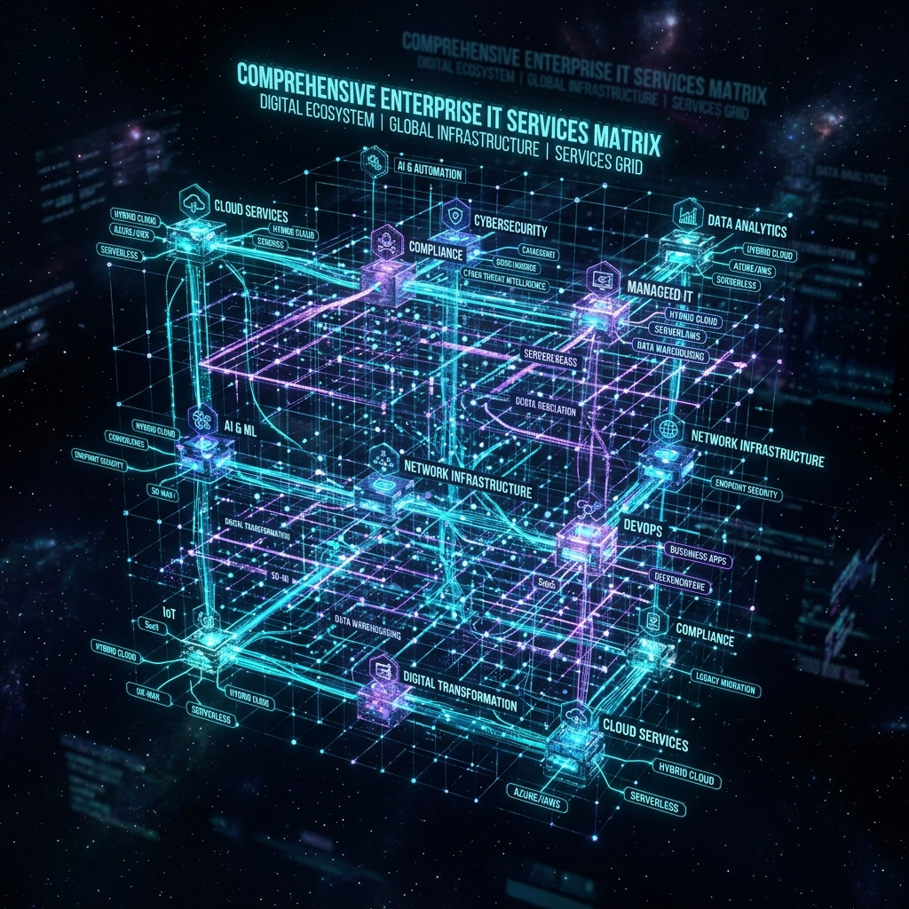

Public & Private Cloud,
Implementations & Infrastructure.
Comprehensive cloud transformation covering Public Cloud (AWS, Azure, GCP), Private Sovereign Cloud, cloud-native implementations, custom microservices development, and automated DevOps infrastructure engineering.

Public Cloud & Private Cloud Architectures
Customized deployment models matching strict regulatory compliance, data sovereignty, and performance demands.
Public Cloud Engineering
Multi-region public cloud landing zones across AWS, Microsoft Azure, and Google Cloud Platform (GCP). Built with automated terraform IaC scripts, auto-scaling clusters, and global CDN delivery.
- ✓ AWS EKS / Azure AKS / GCP GKE Managed Kubernetes
- ✓ FinOps Cost Optimization (25%-40% Savings)
- ✓ Active-Active Multi-Region Disaster Recovery
Private Sovereign Cloud
On-premises and hosted private cloud setups using VMware SDDC, OpenStack, and Nutanix Enterprise Cloud. Designed for defense, healthcare, and financial institutions requiring 100% data sovereignty.
- ✓ Isolated Air-Gapped Private Cloud Pods
- ✓ SOC 2 Type II, HIPAA & GDPR Compliance
- ✓ Hybrid Connection via AWS DirectConnect / Azure ExpressRoute
Cloud Implementation
Lift-and-shift, re-platforming, and containerization of legacy databases and ERP applications to cloud environments.
Cloud Development
Cloud-native microservices development, serverless functions (AWS Lambda, Azure Functions), and API gateway setup.
Technical Support
Infrastructure monitoring, patch management, security vulnerability patching, and database tuning support.
Security & FinOps
Continuous cloud spend optimization, zero-trust network policies, identity federation, and compliance audits.